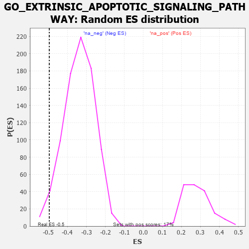

| | | Dataset | 7d |
| Phenotype | NoPhenotypeAvailable |
| Upregulated in class | na_neg |
| GeneSet | GO_EXTRINSIC_APOPTOTIC_SIGNALING_PATHWAY |
| Enrichment Score (ES) | -0.4952364 |
| Normalized Enrichment Score (NES) | -1.4658551 |
| Nominal p-value | 0.035971224 |
| FDR q-value | 0.22488375 |
| FWER p-Value | 1.0 |
Table: GSEA Results Summary
 Fig 1: Enrichment plot: GO_EXTRINSIC_APOPTOTIC_SIGNALING_PATHWAY
Fig 1: Enrichment plot: GO_EXTRINSIC_APOPTOTIC_SIGNALING_PATHWAY
Profile of the Running ES Score & Positions of GeneSet Members on the Rank Ordered List
| PROBE | GENE SYMBOL | GENE_TITLE | RANK IN GENE LIST | RANK METRIC SCORE | RUNNING ES | CORE ENRICHMENT | | 1 | HGF | | | 276 | 0.870 | -0.0084 | No |
| 2 | GSK3A | | | 351 | 0.745 | 0.0049 | No |
| 3 | BAX | | | 387 | 0.711 | 0.0221 | No |
| 4 | HTRA2 | | | 527 | 0.621 | 0.0234 | No |
| 5 | HMGB2 | | | 892 | 0.507 | -0.0071 | No |
| 6 | DEDD2 | | | 999 | 0.484 | -0.0057 | No |
| 7 | AKT1 | | | 1040 | 0.476 | 0.0037 | No |
| 8 | YAP1 | | | 1041 | 0.475 | 0.0181 | No |
| 9 | DDX47 | | | 1103 | 0.463 | 0.0245 | No |
| 10 | SRC | | | 1128 | 0.459 | 0.0354 | No |
| 11 | WWOX | | | 1688 | 0.359 | -0.0242 | No |
| 12 | RAF1 | | | 2011 | 0.303 | -0.0557 | No |
| 13 | FAF1 | | | 2340 | 0.255 | -0.0894 | No |
| 14 | BAG3 | | | 2620 | 0.209 | -0.1182 | No |
| 15 | DAPK3 | | | 2880 | 0.169 | -0.1458 | No |
| 16 | ACVR1 | | | 2932 | 0.161 | -0.1473 | No |
| 17 | BIRC6 | | | 3047 | 0.143 | -0.1574 | No |
| 18 | GPX1 | | | 3109 | 0.135 | -0.1609 | No |
| 19 | SMAD3 | | | 3303 | 0.105 | -0.1821 | No |
| 20 | PARP2 | | | 3316 | 0.103 | -0.1805 | No |
| 21 | DDX3X | | | 3388 | 0.091 | -0.1867 | No |
| 22 | NF1 | | | 3713 | 0.040 | -0.2264 | No |
| 23 | DAXX | | | 3722 | 0.038 | -0.2262 | No |
| 24 | EYA1 | | | 3987 | -0.006 | -0.2594 | No |
| 25 | SFRP2 | | | 4065 | -0.018 | -0.2686 | No |
| 26 | TRAF1 | | | 4104 | -0.024 | -0.2727 | No |
| 27 | PSME3 | | | 4280 | -0.056 | -0.2931 | No |
| 28 | SGPP1 | | | 4573 | -0.112 | -0.3265 | No |
| 29 | FGFR3 | | | 4656 | -0.129 | -0.3330 | No |
| 30 | PDIA3 | | | 4740 | -0.147 | -0.3390 | No |
| 31 | TERT | | | 4801 | -0.157 | -0.3418 | No |
| 32 | PDPK1 | | | 5043 | -0.207 | -0.3659 | No |
| 33 | PTEN | | | 5262 | -0.261 | -0.3855 | No |
| 34 | SGK3 | | | 5338 | -0.282 | -0.3864 | No |
| 35 | FGFR1 | | | 5543 | -0.332 | -0.4021 | No |
| 36 | CASP8 | | | 5678 | -0.369 | -0.4077 | No |
| 37 | MADD | | | 5686 | -0.371 | -0.3974 | No |
| 38 | STK4 | | | 6145 | -0.518 | -0.4394 | No |
| 39 | RNF41 | | | 6588 | -0.703 | -0.4738 | Yes |
| 40 | RFFL | | | 6674 | -0.749 | -0.4618 | Yes |
| 41 | GSK3B | | | 6719 | -0.768 | -0.4440 | Yes |
| 42 | RNF34 | | | 7040 | -0.963 | -0.4551 | Yes |
| 43 | AR | | | 7169 | -1.046 | -0.4394 | Yes |
| 44 | CIB1 | | | 7280 | -1.152 | -0.4183 | Yes |
| 45 | CYLD | | | 7333 | -1.206 | -0.3881 | Yes |
| 46 | CASP2 | | | 7442 | -1.322 | -0.3616 | Yes |
| 47 | DCC | | | 7550 | -1.470 | -0.3304 | Yes |
| 48 | BOK | | | 7715 | -1.817 | -0.2958 | Yes |
| 49 | CASP3 | | | 7747 | -1.902 | -0.2419 | Yes |
| 50 | TRAF2 | | | 7861 | -2.481 | -0.1807 | Yes |
| 51 | FYN | | | 7881 | -2.622 | -0.1033 | Yes |
| 52 | DAPK1 | | | 7950 | -3.767 | 0.0027 | Yes |
Table: GSEA details [plain text format]

Fig 2: GO_EXTRINSIC_APOPTOTIC_SIGNALING_PATHWAY: Random ES distribution
Gene set null distribution of ES for GO_EXTRINSIC_APOPTOTIC_SIGNALING_PATHWAY